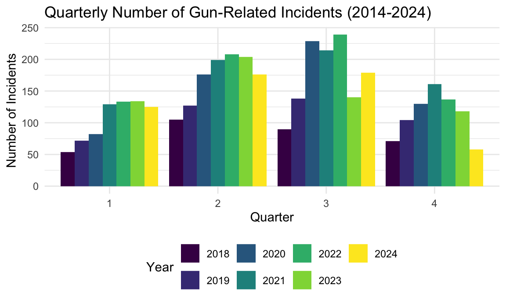

EDA/Data Analysis
Loading Libraries and Reading Data
library(tidyverse)
library(lubridate)
library(ggplot2)gun_df = read.csv("data/mass_shootings_2018_2024_cleaned.csv") |>
janitor::clean_names()Structure and Size of Data
The dataset contains information on gun-related incidents from 2018
to 2024 across different cities and states in the United States. There
are a total of nrow(gun_df) observation and
ncol(gun_df) variables.
date: Date of the incident (class:Date)city: City where the incident occurred (class:character)state: State where the incident occurred (class:character)dead: Number of fatalities (class:integer)injured: Number of injuries (class:integer)total: Total number of victims (Dead + Injured) (class:character)description: Textual description of incident (class:character)
glimpse(gun_df)## Rows: 3,932
## Columns: 7
## $ date <chr> "2024-11-18", "2024-11-17", "2024-11-17", "2024-11-16", "2…
## $ city <chr> "Denver", "New Orleans", "Columbus", "Walthall County", "R…
## $ state <chr> "Colorado", "Louisiana", "Ohio", "Mississippi", "Californi…
## $ dead <int> 0, 0, 0, 1, 0, 3, 1, 3, 1, 5, 0, 1, 0, 1, 2, 0, 3, 5, 0, 0…
## $ injured <int> 4, 10, 4, 4, 4, 1, 4, 1, 3, 0, 4, 12, 5, 3, 2, 5, 3, 0, 4,…
## $ total <int> 4, 10, 4, 5, 4, 4, 5, 4, 4, 5, 4, 13, 5, 4, 4, 5, 6, 5, 4,…
## $ description <chr> "Four men were wounded at a strip mall following a dispute…Comparing Number of Incidents by Year, Quarter, Month, and Weekday
First, we will compare the number of incidents by year.
gun_df = gun_df |>
mutate(date = as.Date(date),
year = year(date))
gun_plot = gun_df |>
ggplot(aes(x = as.factor(year))) +
geom_bar(fill = "red") +
scale_y_continuous(
labels = scales::comma,
limits = c(0, NA),
expand = expansion(mult = c(0, 0.15))
) +
geom_label(stat = "count", aes(label = after_stat(count), y = after_stat(count)), vjust = -0.5) +
labs(
title = "Number of Gun-Related Incidents by Year",
x = "Year",
y = "Number of Incidents"
)
print(gun_plot)
The graph shows a general upward trend in gun-related incidents from 2018 to 2022. The peak would be at 717 incidents. The year 2020 shows a significant increase, rising from 441 incidents in 2019 to 617 incidents, and the trend continues with 703 incidents in 2021. However, from 2023 to 2024, the number of incidents appear to decline, with 596 incidents in 2023 and 538 incidents in 2024. This suggests that while the number of incidents has increased over the past few years, the decline in recent years might reflect a shift in trends or external factors impacting the data. Further analysis would be needed to understand the variations in detail.
We will now compare the number of incidents by quarter for each year.
gun_df = gun_df |>
mutate(date = as.Date(date, format = "%Y-%m-%d"),
year = year(date),
quarter = quarter(date)
)
gun1_plot = gun_df |>
ggplot(aes(x = factor(quarter), fill = factor(year))) +
geom_bar(position = "dodge") +
labs(
title = "Number of Gun-Related Incidents by Quarter (2014-2024)",
x = "Quarter",
y = "Number of Incidents",
fill = "Year"
)
print(gun1_plot)
Let’s further break it down by years and quarters.
q1 = gun_df |>
filter(year != 2013) |>
select(year, quarter) |>
group_by(year) |>
count(quarter) |>
ggplot(aes(x = as.factor(quarter), y = n)) +
geom_bar(stat = 'identity') +
scale_y_continuous(labels = scales::comma) +
facet_grid(. ~ year) +
labs(x = 'Quarter', y = 'Number of incidents')
q2 = gun_df |>
filter(year != 2013 & quarter == 1) |>
select(year, quarter) |>
group_by(year) |>
count(quarter) |>
ggplot(aes(x = as.factor(year), y = n)) +
geom_bar(stat = 'identity') +
scale_y_continuous(labels = scales::comma) +
labs(x = 'Incidents in Q1 of each year', y = 'Number of incidents')
gridExtra::grid.arrange(q1, q2)
The dataset on incidents of gun violence from 2018-2024 show some seasonality. We notice incidents in Q1 and Q4 are generally lower than those in Q2 and Q3. The second graph highlights that Q1 incidents increased steadily from 2018 to 2021, with smaller increases observed between 2021 and 2022, as well as between 2022 and 2023, suggesting a leveling-off trend during this period. In 2024, there is a slight decrease compared to 2023, but it is important to consider that 2024 is not yet complete. This potential plateau in Q1 incidents could signal a stabilization, though the overall trend since 2018 indicates a significant increase that still warrants attention.
We will now compare the number of incidents by months.
gun_df$month <- month(gun_df$date, label = TRUE)
gun2_plot = plotly::ggplotly(
gun_df |>
filter(year != c(2013, 2018)) |>
count(month) |>
ggplot(aes(x = month, y = n)) +
geom_bar(stat = 'identity', fill = 'red') +
scale_y_continuous(labels = scales::comma) +
labs(x = 'Month', y = 'Number of incidents', title = 'Incidents by Month')
)
gun2_plotThe graph shows the number of incidents by month. Again, we see a clear seasonal trend. Incidents steadily rise from January through July, peaking in July (likely due to heightened activity during the summer months). A sharp decline follows from August to December, with November and December showing the lowest numbers. This could be influenced by colder weather, holiday periods, or shorter months (i.e., February). The visible trends suggest a relationship between weather (seasonal variations), social behavior, and incident rates. You can hover over the bars for exact values to compare these trends in more detail.
Let’s see the dates with the most incidents.
gun_df$day = day(gun_df$date)
gun_df = gun_df |> mutate(date2 = paste(month, day))
knitr::kable(
gun_df |>
filter(year != c(2013, 2018)) |>
count(date2) |>
top_n(10) |>
arrange(desc(n)) |>
rename(date = date2, "total number of incidents" = n)
)## Selecting by n| date | total number of incidents |
|---|---|
| Jul 5 | 49 |
| Jul 4 | 48 |
| Jan 1 | 31 |
| Jun 11 | 26 |
| Jul 28 | 23 |
| Jun 17 | 23 |
| Jun 20 | 22 |
| Jun 23 | 22 |
| Jul 23 | 21 |
| May 18 | 21 |
The table highlights the dates with the highest total number of incidents, aggregated over 2018-2024. July 5th and July 4th stand out with 49 and 48 incidents respectively, indicating that Independence Day celebrations significantly contribute to increased incidents, likely due to festivities and the use of fireworks or firearms. January 1st, with 31 incidents, suggests that New Year’s Day also brings heightened risk, potentially linked to post-midnight celebrations and gatherings. The remaining dates predominantly occur in late June and July, with totals ranging from 21 to 26 incidents, reflecting a seasonal peak in incidents during summer months. May 18th, while slightly earlier, still aligns closely with this summer trend, reinforcing the pattern of increased incidents during warmer months. These results show the influence of holidays and seasonal trends on incident rates.
We will now compare the number of incidents by weekday.
gun_df$weekday = wday(gun_df$date, label = TRUE)
gun_df |>
count(weekday) |>
ggplot(aes(x = weekday, y = n)) +
geom_bar(stat = 'identity', fill = 'red') +
scale_y_continuous(labels = scales::comma) +
labs(x = 'Weekday', y = 'Number of incidents', title = 'Incidents by Weekday')
Sunday stands out as the most dangerous day, with incidents far exceeding 900. Saturdays follow closely with around 900 incidents. Fridays show a moderate increase with about 450 incidents, marking the start of the weekend.Meanwhile, weekdays see significantly lower numbers, with Tuesday recording the fewest incidents at around 200, followed by Thursday at about 350, Wednesday at 375, and Monday at 440. This trend show the influence of weekends or leisure culture on the frequency of incidents, with weekdays being relatively safer perhaps due to structured routines and fewer late-night activities.
Incidents by state
gun_df[, c('state', 'city')] <- lapply(gun_df[, c('state', 'city')], as.factor)
str(gun_df$state)## Factor w/ 53 levels "Alabama","Alaska",..: 6 19 36 25 5 5 5 5 32 17 ...str(gun_df$city)## Factor w/ 1158 levels "Abbeville","Aberdeen",..: 259 730 214 1081 871 583 722 909 14 1120 ...plotly::ggplotly(gun_df %>%
count(state) %>%
ggplot(aes(x=reorder(state, n), y=n, fill=n, text=state)) +
geom_bar(stat='identity', fill='red') +
theme(axis.text.x = element_text(angle = 80, hjust = 1))+
labs(x='', y='Number of incidents'),
tooltip=c("text", "y"))The interactive bar graph above shows absolute number of gun violence by states. Hovering over the bars shows a label with the absolute Number of Incidents for a State. Illinois has the highest number of gun violence cases followed by California.
Victims by state
gun_df$victims <- gun_df$dead + gun_df$injured
VictimsByState <- gun_df %>%
group_by(state) %>%
summarize(sumVic=sum(victims), sumInj=sum(injured), sumDeath=sum(dead), PercDeath=round(sumDeath/sumVic,2), sumIncidents=n(), vicPerInc=round(sumVic/sumIncidents,2))
head(VictimsByState)## # A tibble: 6 × 7
## state sumVic sumInj sumDeath PercDeath sumIncidents vicPerInc
## <fct> <int> <int> <int> <dbl> <int> <dbl>
## 1 Alabama 647 516 131 0.2 115 5.63
## 2 Alaska 26 14 12 0.46 6 4.33
## 3 Arizona 260 193 67 0.26 46 5.65
## 4 Arkansas 265 208 57 0.22 49 5.41
## 5 California 1564 1174 390 0.25 297 5.27
## 6 Colorado 382 278 104 0.27 71 5.38VictimsByState %>%
filter(vicPerInc>0.8) %>%
ggplot(aes(x=reorder(state, -vicPerInc), y=vicPerInc)) + geom_bar(stat='identity', fill='red') +
labs(x='State', y='Victims per incidents') +
theme(axis.text.x = element_text(angle = 80, hjust = 1))The bar graph above shows the number of victims per incident by state. Maine has the highest victims by incidents followed by Washington Dc followed by Puerto Rico.
Incidents by city
incidentsByCity <- gun_df%>%
select(city, state) %>%
group_by(city, state) %>%
summarize(cityIncidents=n())## `summarise()` has grouped output by 'city'. You can override using the
## `.groups` argument.incidentsByCity[(incidentsByCity$city %in% c('Brooklyn', 'Bronx', 'Queens', 'Staten Island','New York (Manhattan)')) & incidentsByCity$state=='New York',]## # A tibble: 0 × 3
## # Groups: city [0]
## # ℹ 3 variables: city <fct>, state <fct>, cityIncidents <int>sumNewYork <- sum(incidentsByCity$cityIncidents[(incidentsByCity$city %in% c('Brooklyn', 'Bronx', 'Queens', 'Staten Island','New York (Manhattan)')) & incidentsByCity$state=='New York'])
NewYork <- data.frame(city='New York', state='New York', cityIncidents=sumNewYork)
incidentsByCity <- as.tibble(rbind(as.data.frame(incidentsByCity), NewYork))incidentsByCity %>% top_n(20, wt=cityIncidents) %>%
ggplot(aes(x=reorder(city, cityIncidents), y=cityIncidents)) + geom_bar(stat='identity', fill='red') +
labs(x='City', y='Number of incidents') + coord_flip()The bar graph above shows the number of incidents by city. Chichago has the highest number of incidents (~260) followed by Philadelphia (~130) followed by New York city (~90).
gun_df <- read.csv("data/mass_shootings_2018_2024_cleaned.csv") |>
janitor::clean_names()
uscities <- read.csv("data/simplemaps_uscities/uscities.csv") |>
janitor::clean_names()Load necessary libraries
library(leaflet)
library(dplyr)Merge datasets to add lat and lon to gun_df
gun_df <- gun_df |>
left_join(
uscities |> select(city, state_name, lat, lng),
by = c("city" = "city", "state" = "state_name")
)
write.csv(gun_df, "gun_df.csv")incidents with highet number of victims
top_incidents <- gun_df |>
select(date, city, state, dead, injured, total, description, lat, lng) |>
arrange(desc(total)) |>
slice(1:13)
top_incidents## date city state dead injured total
## 1 2022-07-04 Highland Park Illinois 7 48 55
## 2 2019-08-03 El Paso Texas 23 22 45
## 3 2022-05-24 Uvalde Texas 22 18 40
## 4 2019-08-04 Dayton Ohio 10 27 37
## 5 2023-04-15 Dadeville Alabama 4 32 36
## 6 2018-02-14 Parkland Florida 17 17 34
## 7 2023-10-25 Lewiston Maine 19 13 32
## 8 2024-06-02 Akron Ohio 1 29 30
## 9 2023-07-02 Baltimore Maryland 2 28 30
## 10 2018-11-07 Thousand Oaks California 13 16 29
## 11 2022-03-19 Dumas Arkansas 1 26 27
## 12 2022-11-19 Colorado Springs Colorado 5 19 24
## 13 2018-05-18 Santa Fe Texas 10 14 24
## description
## 1 Highland Park parade shooting: Seven people were killed and 48 others were wounded after a person opened fire from a rooftop on people attending an Independence Day parade. Eleven others were injured fleeing the scene. The shooter also admitted he had plans to drive to Madison, Wisconsin, to shoot more people. He was charged with a total of 117 counts later in the month.
## 2 2019 El Paso shooting: 23 people were killed and 22 were injured at a Walmart near the Cielo Vista Mall in a Hispanophobic massacre. The perpetrator was taken into custody.
## 3 Robb Elementary School shooting: An 18-year-old shot his grandmother at their home before driving to Robb Elementary School, where he entered the school unobstructed, barricading himself inside a classroom and fatally shooting twenty-one people, including nineteen children. Eighteen people in total were wounded. The shooter was eventually fatally shot by a Border Patrol officer, who was shot during the shootout.
## 4 2019 Dayton shooting: A gunman killed nine people and injured 27 outside of a bar after he was denied entry, before being killed by police.
## 5 2023 Dadeville shooting: Four were killed and thirty-two were injured at a 16th birthday party at the Mahogany Masterpiece Dance Studio after an argument escalated.
## 6 Parkland high school shooting: A former student of Marjory Stoneman Douglas High School entered the school, killed seventeen people, and wounded seventeen others. He was taken into custody by police.
## 7 2023 Lewiston shootings: Eighteen people were killed and thirteen others were injured in a spree shooting at a bowling alley and a bar. The shooter was found dead two days later from an apparent self-inflicted gunshot wound.
## 8 A man was killed and at least twenty-nine others were injured in an overnight shooting at a street party.
## 9 2023 Baltimore shooting: Two people were killed and 28 people were injured in South Baltimore.
## 10 Thousand Oaks shooting: A man entered a bar hosting a student line-dancing event and killed twelve people, including a police officer. Sixteen other people were injured, one of them by gunfire. The gunman then killed himself.
## 11 A gunfight between two people at a car show killed one bystander, and wounded 26 others, including five children.
## 12 Colorado Springs nightclub shooting: Five people were killed and 25 others injured, 19 by gunfire, in a shooting inside Club Q, a gay nightclub. Six additional people were injured in the chaos. The shooting happened just before midnight of Transgender Day of Remembrance.
## 13 Santa Fe High School shooting: A student at Santa Fe High School shot and killed ten people and wounded fourteen others. Explosive devices were also found, but they were not detonated. The suspect was taken into custody by police.
## lat lng
## 1 42.1823 -87.8104
## 2 31.8476 -106.4300
## 3 29.2152 -99.7782
## 4 39.7805 -84.2003
## 5 32.8326 -85.7675
## 6 26.3219 -80.2533
## 7 44.0915 -70.1681
## 8 41.0798 -81.5219
## 9 39.3051 -76.6144
## 10 34.1914 -118.8756
## 11 33.8834 -91.4857
## 12 38.8674 -104.7605
## 13 29.3889 -95.1003The above shows the 13 most severe gun-related incidents in the dataset, ranked by the total number of victims (dead and injured). The incidents range from mass shootings at public events to tragic attacks in schools and other locations. Each entry provides details on the location, date, fatalities, injuries, and a brief description of the event, offering insights into the magnitude and context of these tragedies.
Interactive Map of the Incidents with highest numbers of victims
labels <- paste0(
"<strong>Date:</strong> ", top_incidents$Date, "<br>",
"<strong>City:</strong> ", top_incidents$city, "<br>",
"<strong>State:</strong> ", top_incidents$state, "<br>",
"<strong>Total Victims:</strong> ", top_incidents$Total, "<br>",
"<strong>Description:</strong> ", top_incidents$Description
) |> lapply(htmltools::HTML)
leaflet(top_incidents) |>
setView(lng=-96, lat=37.8, zoom=4)|>
addTiles() |>
addProviderTiles("CartoDB.Positron") |>
addCircleMarkers( ~lng, ~lat, color = "red", radius = ~sqrt(total),
label = labels,
fillOpacity = 0.7
)